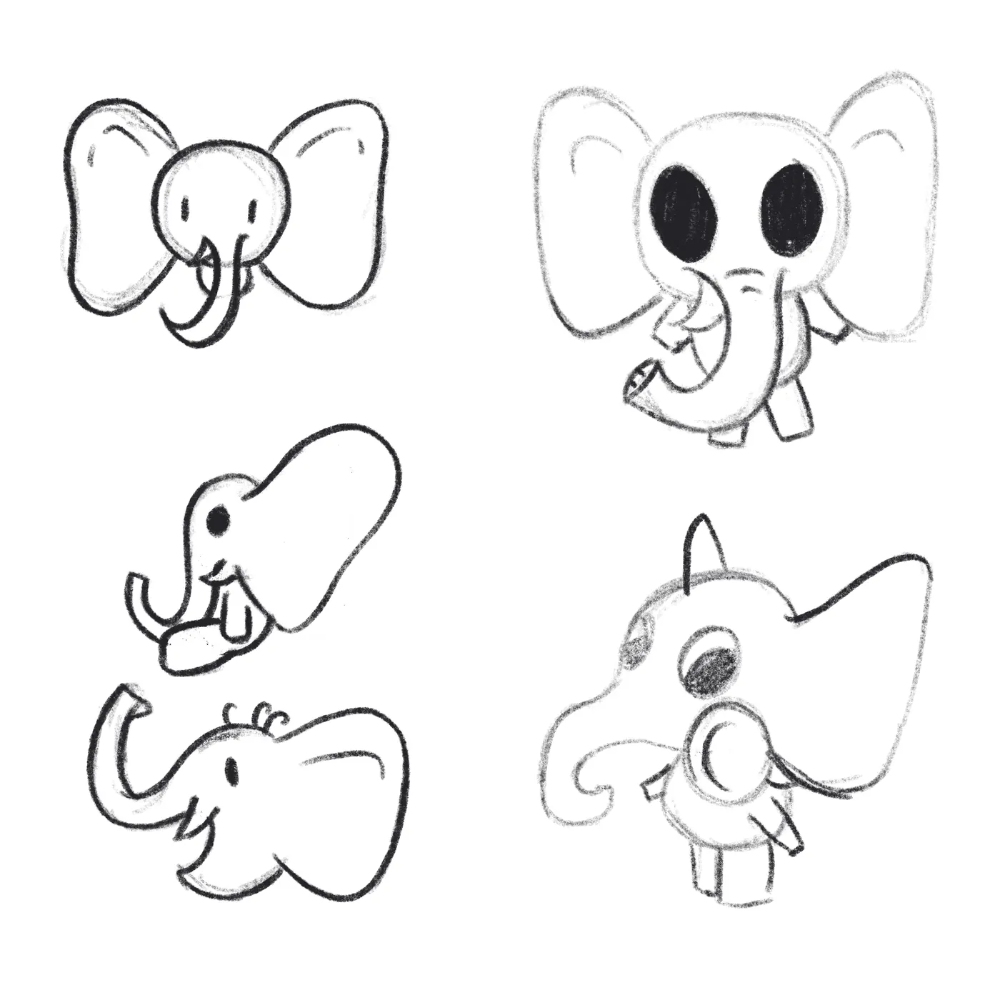
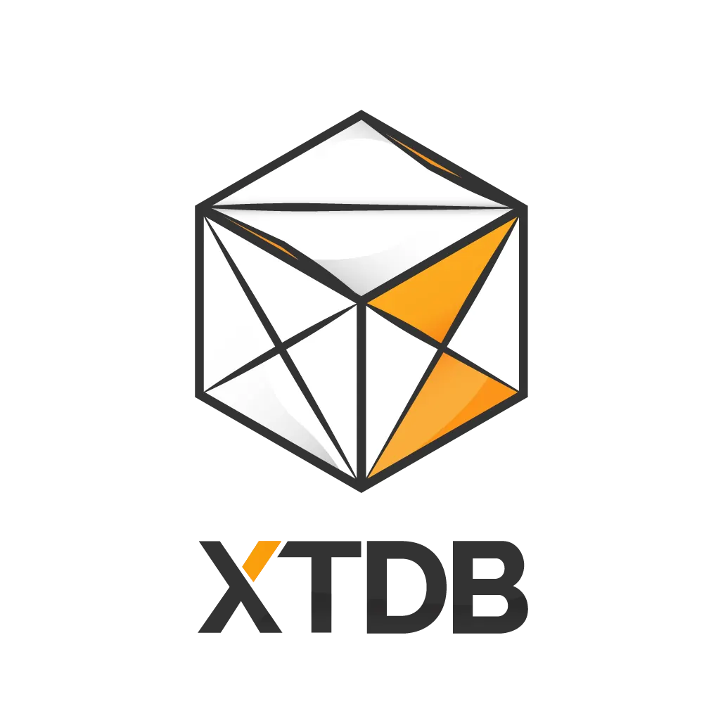

A technology database with a unique time-focused solution in search of a better visual identity.
Re-branding
Brand guidelines
Canada50–200 employees~$10M ARR
concepts that capture remembering
xtdbRe-brandingBrand guidelines
These early concepts came out of generative work to capture feelings of remembering — and particularly those facets around permanence and predictable reliability. Concepts needed to feel inspiring, while looking for a humanizing touch was desirable and differentiating.
The compass for the visual exploration: human-made · inspiring · reliability · spatial persistence · temporal persistence · memory.
the tree rings record history

elephants never forget — playful, joyful
origami — mathematical, human-made, inspiring
a web of neurons / galactic clusters — awe-inspiring, interconnected information
server stacks — technological, advanced, database, storage
black holes — no information can escape
wormholes — awe-inspiring, connected across time and space
↓ pick one — and shape it
the origami refines
xtdbRe-brandingBrand guidelines
Once the origami shape had been selected, the refinements added depth and a sense of humanity — while maintaining recognizability through similarity with the branding and colors of JUXT, the parent company.

small folds give the sense of folds
subtle shading for a three-dimensional feel to the logo
colored X in an hourglass fashion
retains color, and a hero element in X, from the parent company
↓ make it travel — guidelines for every surface
guidelines so it travels
xtdbRe-brandingBrand guidelines
How does branding create consistency? By taking on the considerations required for edge cases, the branding gains a sense of completeness.
For XTDB, an established brand, the new logo had to support existing artifacts — both print and digital.
↓ where we started, where we landed
old → new
xtdbRe-brandingBrand guidelines
After choosing the new name XTDB, they needed refreshed visual branding — incorporating temporal ideas while maintaining the feelings of flexibility, creativity and openness that the database's previous branding embodied.
XTDB, formerly known as CRUX, a JUXT-owned company, is a general-purpose bi-temporal SQL & Datalog database.
old logo
the new origami mark — humanizing, mathematical, time-aware
your move
Need a brand that actually fits the technology? Be our friends.